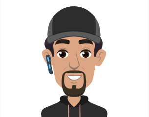

John Joseph Olivera

Objective
To contribute to web projects by implementing innovative solutions and best practices.
Education
Bachelor of Science in Information Management -
University of Rizal System - Binangonan Rizal
2008 - 2012
Work Experience
Stefanini Philippines
Helpdesk Technician I
Pasay city, Philippines
- Serving as the first point of contact for customers seeking technical assistance over the phone, email and chat.
- Performing remote troubleshooting through diagnostic techniques and pertinent questions
- Determining the best solution based on the issue and details provided by customers
Dec 2018 - June 2022
Skills and Abilities
- Motivated and always willing to learn new things
- Independent and self-sufficient in handling tasks
- Collaborative and able to work in teams or groups
- Flexible and fast learner
- Computer troubleshooting knowledge
- Basic Networking
- Windows 7, 8, 10
- Linux Ubuntu
- CLI
- JavaScript
- jQuery
- MySql
- HTML
- CSS
Contact Me
Hobbies
copyrigth © 2024 JJ personal portfolio